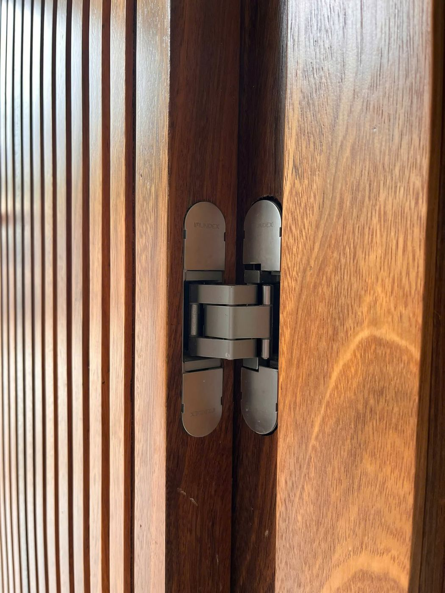
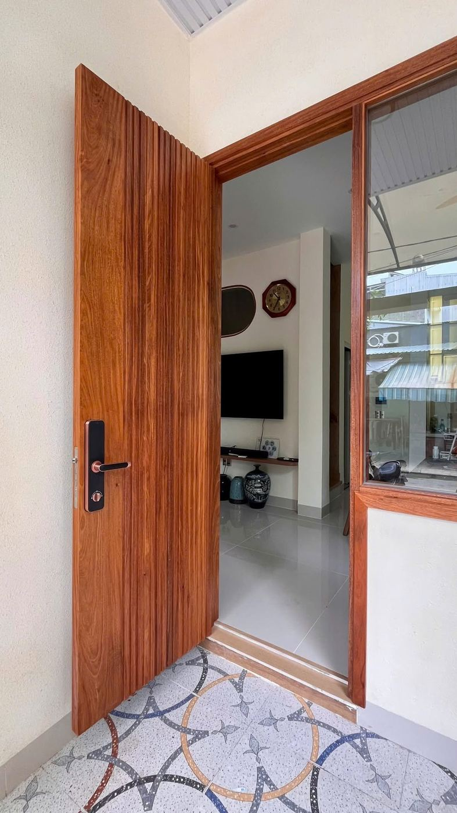

Nói ngắn: bản lề âm Imundex có bốn mã. Cửa phòng và cửa phụ bằng gỗ thường dùng loại hợp kim kẽm 701.46.550 (đen mờ) hoặc 701.46.950 (crom mờ), tải tối đa 60kg mỗi cặp. Cánh gỗ nặng, cánh cao hoặc cửa cần đạt chuẩn chống cháy nên lên loại inox 304 701.16.408, tải 120kg mỗi cặp. Cả bốn mã đều cần cánh dày tối thiểu 38mm.
Bản lề âm là gì, khác bản lề lá thế nào?
Bản lề âm (còn gọi là bản lề ẩn, bản lề lắp âm) được chôn vào hộc phay sẵn trong cạnh cánh và trong khung bao. Khi cửa đóng, bạn không nhìn thấy bản lề ở cả hai mặt. Mặt cửa liền một mảng gỗ, không có lá kim loại lộ ra như bản lề lá truyền thống.
Vì vậy bản lề âm hợp với cửa gỗ phong cách hiện đại, cửa soi rãnh, cửa ốp lam hay cửa sơn màu, những kiểu cửa mà một chi tiết kim loại nhỏ cũng làm vỡ đường nét. Với cửa chính xoay trục cánh lớn, chúng tôi vẫn dùng bản lề sàn Imundex để đỡ cánh. Bản lề âm dành cho cánh phụ, cửa hai cánh và cửa phòng.
Bốn mã bản lề âm Imundex
Imundex thuộc tập đoàn KD. Feddersen của Đức, do Công ty Gỗ An Cường phân phối tại Việt Nam. Trên website hãng, nhóm bản lề lắp âm có bốn mã:
| Mã | Loại | Tải tối đa | Giá* |
|---|---|---|---|
| 701.46.550 | 3D, kẽm đen mờ | 60kg/cặp | 600.000đ |
| 701.46.950 | 3D, kẽm crom mờ | 60kg/cặp | 600.000đ |
| 701.16.408 | 3D, inox 304 | 120kg/cặp | 2.800.000đ |
| 701.16.308 | 2D, inox 304 | 80kg/cặp | 1.750.000đ |
* Giá niêm yết của hãng cho một cái, chưa VAT, trên imundex.com.vn, xem ngày 22/11/2026; giá có thể thay đổi.
Thông số chung cần biết
- Độ dày cánh tối thiểu: 38mm cho cả bốn mã. Cánh cửa chính của xưởng dày 50–55mm nên lắp thoải mái.
- Kích thước loại hợp kim kẽm: phần lắp vào khung 135 × 30mm, phần lắp vào cánh 135 × 28mm.
- Kích thước loại inox: 160 × 29mm (mã 3D) và 112 × 29mm (mã 2D).
- Hướng mở: dùng được cho cả cửa mở trái và mở phải.
- Trong hộp: 1 bản lề, 4 nắp che vít và bộ vít.
- Bảo hành hãng: 2 năm.
Hợp kim kẽm hay inox 304?
Hai mã hợp kim kẽm có giá mềm, đủ cho phần lớn cửa phòng gỗ và có hai màu để phối: đen mờ hợp cửa gỗ tối màu hoặc khung sơn đen, crom mờ hợp cửa gỗ sáng hay sơn trắng.
Hai mã inox 304 đắt hơn nhưng tải cao hơn, bền hơn với độ ẩm và được hãng ghi là phù hợp cho cửa chống cháy theo tiêu chuẩn EN1634-1. Nên chọn inox khi cánh nặng, cửa ở nơi ẩm như nhà vệ sinh, ven biển, hoặc công trình có yêu cầu phòng cháy như khách sạn, căn hộ dịch vụ.
2D hay 3D: điều chỉnh khác nhau ra sao?
Bản lề 3D chỉnh được theo ba hướng: lên xuống, trái phải và độ ép cánh vào khung. Bản lề 2D chỉnh được hai hướng. Gỗ tự nhiên luôn co giãn nhẹ theo mùa, nên khả năng tinh chỉnh sau lắp đặt rất đáng giá: khi khe cửa lệch vài milimet, thợ chỉ cần vặn vít chỉnh, không phải tháo cánh hay phay lại hộc.
Vì lý do này, với cửa gỗ chúng tôi ưu tiên các mã 3D.
Chọn bản lề âm cho cửa nhà bạn

- Ước lượng trọng lượng cánh. Cánh càng rộng, càng cao, càng dày và gỗ càng nặng thì càng nặng. Cùng kích thước, gỗ Lim nặng hơn Teak khá nhiều (xem so sánh gỗ Teak, Lim và Kiền Kiền). Nhớ cộng thêm khoá điện tử, tay nắm và ô kính nếu có.
- Nhớ tải trọng tính theo cặp. 60kg/cặp nghĩa là hai bản lề cùng chịu tối đa 60kg. Đừng chọn sát giới hạn. Cánh cao trên 2m nên lắp ba bản lề để chia tải và giữ cánh thẳng.
- Cánh nặng thì lên inox 120kg/cặp (701.16.408) thay vì cố dùng nhiều bản lề kẽm.
- Chọn màu theo cửa: đen mờ cho gỗ tối và khung sơn đen, crom mờ cho gỗ sáng hoặc sơn trắng.
Lắp đặt: phay hộc chính xác là điều quyết định
Bản lề âm chỉ đẹp và êm khi hộc trong cánh và trong khung được phay đúng kích thước, đúng độ sâu và thẳng hàng tuyệt đối với nhau. Hộc rộng quá thì bản lề lỏng, cánh xệ; hộc lệch thì cửa đóng không khít, cọ khung. Khung bao cũng phải đủ dày và chắc để giữ vít.
Tại xưởng ở Điện Bàn, chúng tôi phay hộc bằng máy theo bản vẽ, lắp thử bản lề vào cánh và khung, chỉnh khe cửa xong mới mang ra công trình. Xem cách bản lề âm phối với các chi tiết khác trên trang Cửa chính, các hãng phụ kiện chúng tôi dùng ở trang Phụ kiện cửa, hoặc công trình cửa gỗ Lim sơn màu tự nhiên tại Thanh Khê.
Gửi kích thước ô cửa, chúng tôi tính trọng lượng cánh và báo giá trọn bộ kèm bản lề phù hợp.
Nhận báo giá